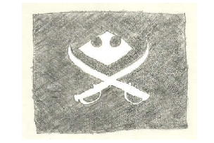

Wusang: Isle of Blaq is a very simple game of chance.
It is a game that anyone can easily play and earn tokens on the Hive blockchain. The goal of Wusang is to have fun by earning Hivebits (HBIT) and, maybe, by finding other treasure tokens hidden around the Isle of Blaq.
Playing Wusang: Isle of Blaq is ultra simple. Learn how to play.
